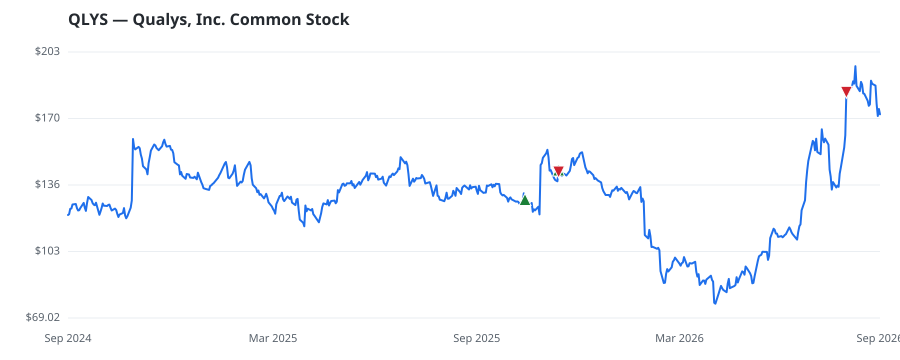

bullish · bearish · n/a — dots: price>SMA10 · SMA10>SMA50 · SMA50>SMA200 · up>down volume (20d)
Software & Services · mid cap
Members who bought QLYS earned a dollar-weighted +5.8% from their disclosure dates, versus -0.7% for the S&P 500 over the same holding windows (+6.5% alpha).

▲ green = a disclosed purchase · ▼ red = a disclosed sale (plotted on disclosure date)
Qualys is a cloud security and compliance solutions provider that helps businesses identify and manage their security risks and compliance requirements. The California-based company has more than 10,000 customers worldwide, the majority of which are small- and medium-size businesses. Qualys was founded in 1999 and went public in 2012. SERVICES-PREPACKAGED SOFTWARE · website
| Revenue | $669.1M | Net income | $198.3M |
|---|---|---|---|
| Operating income | $222.0M | Diluted EPS | $5.44 |
| Assets | $1.1B | Equity | $561.2M |
| Member | Chamber | Out-performer | Disclosed buys $ | Return on buys |
|---|---|---|---|---|
| Lisa McClain | house | — | $16K | +5.8% |
Disclosed $ figures are bracket midpoints — filings report ranges (e.g. $1,001–$15,000), not exact amounts.
This name produced 0.0% of the ranked funds’ total alpha.
| Fund | Fund alpha vs SPY | Position | % of book |
|---|---|---|---|
| WINMILL & CO. INC | +19% | $12M | 2.7% |
| CHASE INVESTMENT COUNSEL CORP | +23% | $3M | 0.6% |
Hedge data: SEC EDGAR 13F · ranked funds beat SPY in >50% of their quarters · fund alpha = mirror-portfolio return minus SPY.